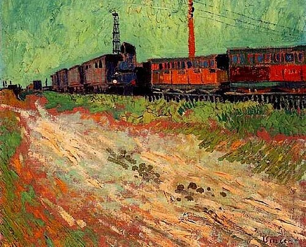

작품
F446 Railway Carriages

회화 · 카탈로그 F446 · JH1553 · 1888-08
고해상도 이미지 보기 · Wikimedia Commons
이 그림을 언급한 편지 (3편)
이미지: 퍼블릭 도메인 · Wikimedia Commons. 작품 식별은 Faille(F)·Hulsker(JH) 카탈로그 번호와 Wikidata를 사용했습니다.
작품

회화 · 카탈로그 F446 · JH1553 · 1888-08
고해상도 이미지 보기 · Wikimedia Commons
이미지: 퍼블릭 도메인 · Wikimedia Commons. 작품 식별은 Faille(F)·Hulsker(JH) 카탈로그 번호와 Wikidata를 사용했습니다.